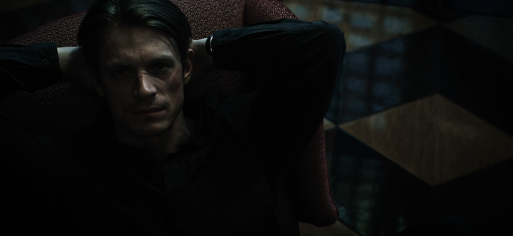

Sven a grandi en Suède dans une famille sans histoire particulière. Enfant, il pouvait passer des heures sur quelque chose qui l'intéressait et devenir parfaitement sourd au reste du monde.
Il n'avait pas dix ans lorsqu'il démonta une vieille radio simplement pour comprendre ce qu'il y avait dedans. Elle ne fonctionna plus jamais. Cela ne l'empêcha pas de recommencer avec tout ce qui lui tombait sous la main.

II · Grandir
À l'adolescence, les moteurs remplacèrent progressivement les radios. Sa première voiture ne valait presque rien, démarrait quand elle en avait envie et possédait une portière qu'il fallait claquer deux fois. Il l'adorait précisément pour toutes ces raisons.
III · L'uniforme
L'armée n'était pas un rêve d'enfant. Sven s'est engagé jeune adulte parce qu'il cherchait quelque chose de concret : un cadre, des responsabilités et un métier où l'on comptait réellement les uns sur les autres.
Aujourd'hui fanjunkare, il sert au Livgardet, à Kungsängen, au sein du 13e bataillon de sécurité.
IV · Les retours
Lorsqu'il rentre, Sven aime retrouver des choses parfaitement ordinaires. Une douche, quelque chose à manger, de la musique laissée en fond et une soirée pendant laquelle personne n'attend rien de lui.
V · Le garage
Le garage est l'endroit où il disparaît lorsqu'il a besoin de penser à autre chose. Les voisins ont fini par comprendre qu'ils pouvaient venir le chercher pour une batterie à plat, une roue à changer ou simplement un avis.
VI · Les autres
Il demande rarement deux fois comment quelqu'un prend son café. Sven n'appelle pas cela prendre soin des autres. Pour lui, ce sont simplement des choses que l'on retient lorsque quelqu'un compte.